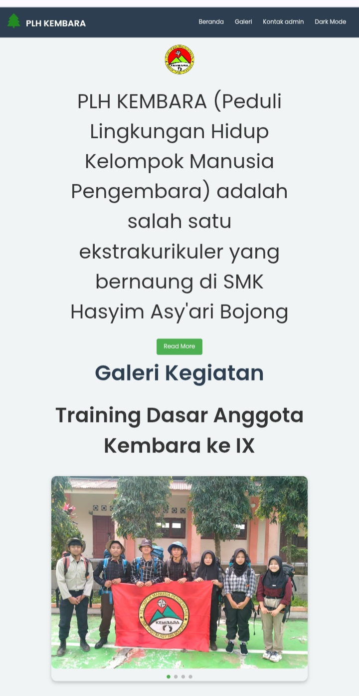
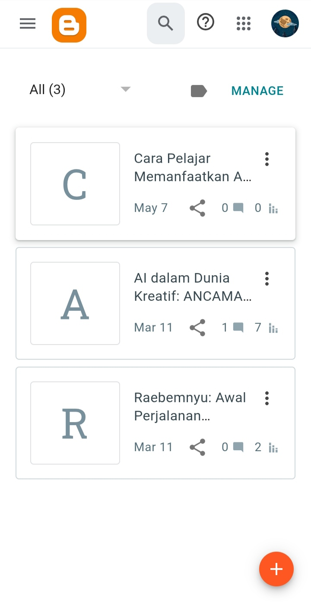

Works
Project One
Pada Project One, saya menghadirkan website organisasi pertama yang saya bangun dari nol. Desainnya menerapkan prinsip responsif, sehingga konten (profil, visi-misi, dan agenda kegiatan) dapat diakses dengan nyaman baik di desktop maupun perangkat mobile. Saya menggunakan HTML, CSS, dan JavaScript dasar untuk struktur dan animasi ringan, serta mempraktikkan teknik pengorganisasian file yang rapi agar mudah dikembangkan. Melalui proyek ini, saya belajar implementasi layout grid, navigasi intuitif, dan optimasi performa dasar sehingga website memuat cepat meski koneksi terbatas. .
Project Two
Project Two menampilkan halaman Blogger sederhana namun fungsional, di mana saya mempublikasikan tiga tulisan fiksi awal saya. Setiap posting dilengkapi judul, tanggal publikasi, dan cuplikan singkat, tersusun dalam tata letak bersih yang memprioritaskan pembaca. Meskipun masih terbatas pada tiga artikel, saya fokus pada konsistensi tema visual—memadukan font yang mudah dibaca, spasi antar paragraf yang seimbang, dan gambar pendukung yang relevan. Proyek ini mengasah kemampuan saya dalam menulis, memilih topik, serta memahami user flow di platform blogging..
Project Three

Koleksi hasil rajut ini merupakan sebuah karya handmade yang saya buat dengan penuh ketelitian dan kreativitas. Mulai dari tas rajut multifungsi, pouch, hingga aksesoris unik lainnya. Setiap produk dibuat dengan benang berkualitas dan detail yang rapi, cocok untuk kebutuhan sehari-hari maupun sebagai hadiah spesial.